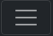

Fixed navbar
Home
Link
Disabled
Search

Sticky footer with fixed navbar
Pin a footer to the bottom of the viewport in desktop browsers with this custom HTML and CSS. A fixed navbar has been added with
padding-top: 60px;
on the
main > .container.
Back to
the default sticky footer
minus the navbar.